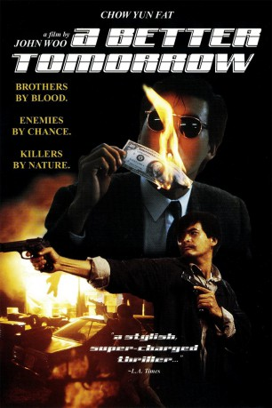

#1077 A Better Tomorrow 1
Alternativ: A Better Tomorrow (Englischer Titel)
 
 IMDB-Wertung: 7.6 / 10
IMDB-Wertung: 7.6 / 10  Metascore: 0
Metascore: 0 
Actionfilm aus Hong Kong von John Woo, der das neue Action-Subgenre Heroic Bloddshed schuf und dem Hong Konger Kino zum internationalen Durchbruch verhalf. Inhaltlich geht es um zwei unterschiedliche Brüder: der eine ist Polizist, der andere arbeitet als Fälscher und ist in einer Triade, gegen die sein Bruder ermittelt. Es kommt zu grossen Konflikten. Es folgten zwei Fortsetzungen 1987 und 1989.
Jahr: 1986
Dauer: 95 Minuten
FSK: 18
Land: Hong-Kong Studio: Astro DistributionTonspuren: DD2.0 - ,
Untertitel: Englisch,
Auflösung: 1080p (1920x1080) Größe: 19353 MB
Genre: Action, Krimi, Drama, Thriller
Regisseur:  John Woo
John Woo
Drehbuch: Hing-Ka Chan, Suk-Wah Leung, John Woo
Soundtrack: Joseph Koo
Darsteller:
Datei: X:\FSK18-Eastern-Collections\A Better Tomorrow\Better Tomorrow 1, A (1986, FSK18, 1920x1080).mkv seit 18.05.2015
Festplatte: FSK18
 Es gibt insgesamt 8 Filme in der Gruppe 'FSK18-Eastern-Collections\A Better Tomorrow'
Es gibt insgesamt 8 Filme in der Gruppe 'FSK18-Eastern-Collections\A Better Tomorrow'